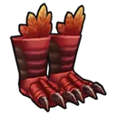

Garras da Fênix
Calçados leves · Tier 15 · Nível 46
Não servem para correr nem para voar, mas são cheias de estilo.
Atributos
Ataque
163
Defesa
650
Economia
Valor
20.700.000
Tempo de fabricação
3d 22h
XP do comerciante
355.000
Trabalhadores: Alfaiate 38, Mestre 34, Ferreiro 31
Receita


Marcos do projeto
4
Tempo de fabricação -30%
10
-148 Couro
18
Valor +25%
25
-44 Tecido
40
Chance de qualidade +1